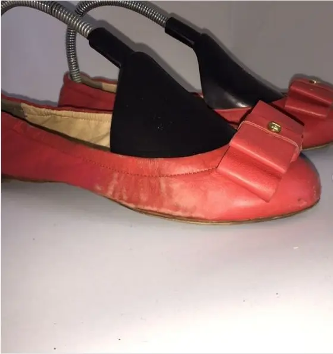

Корекція потертостей
Вирівнюємо колір на носках, згинах, кутах і краях.
Працюємо зі взуттям, сумками та шкіряним одягом. Перед фарбуванням очищуємо й готуємо поверхню, тестуємо матеріал і погоджуємо очікуваний відтінок.

Результат залежить від типу шкіри, попереднього покриття та різниці між початковим і бажаним кольором.
Вирівнюємо колір на носках, згинах, кутах і краях.
Повертаємо глибину й рівномірність на всій поверхні виробу.
Оцінюємо, чи можна безпечно перейти в інший відтінок.
Закріплюємо фарбу та підбираємо подальший догляд.
Стан поверхні перед роботою визначає підготовку, кількість шарів і можливий результат.
Знімаємо забруднення та готуємо старе покриття.
Вирівнюємо тон без грубого перекриття фактури.
Захищаємо покриття та перевіряємо рівномірність.
Точну суму можна визначити лише після огляду площі та покриття.
Визначаємо тип шкіри та стан старого покриття.
Очищуємо й знежирюємо поверхню.
Наносимо тон контрольованими шарами.
Закріплюємо покриття й перевіряємо рівномірність.